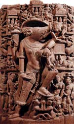

Вішну ("всеосяжний"), в індуїзмі один з найважливіших і найбільш шанованих богів; разом з Шивою і Брахмой він становив божественну тріаду, тримурти: Вішну - хранитель світобудови; величний і одночасно жахливий, але менш грізний, ніж Шива. Вішнуїтів, шанувальники Вішну, вважають його верховним богом - один з його епітетів "вищий бог".
Індуїстська концепція "Абсолюту", або вища реальність Брахман, іноді зображується як Вішну. Відповідно до одного з міфів, з пупа Вішну виник квітка лотоса - і сидить в центрі квітки Брахма почав акт творення. Головна функція Вішну - сприяти перемозі добра над злом.
У древніх індуїстських священних текстах Рігведи Вішну з'являвся лише як другорядне божество. Виникнувши як бог сонця, він міг перетинати космос трьома кроками, що було символом бога, що вимірює всесвіт і населяє її богами і людьми.
Пізніше Вішну став асоціюватися з рибою і карликом. Ці асоціації перетворилися в концепцію інкарнацій Вішну, відомих як аватари. З'являючись в різні обличчя, Вішну боровся з демонами і відновлював божественний порядок, коли космосу загрожувало знищення. Найбільш важливими аватарами Вішну є бог Крішна, герой Рама, бог-вепр Вараха. В індуїзмі будда Шак'ямуні також вважається однією з інкарнацій великого бога.
У своїй інкарнації в карлика Вішну врятував світ від демона Балі. Він переконав Балі дати йому стільки землі, скільки можна пройти за три кроки, і тут же перетворився на гіганта. Двома кроками Вішну перетнув всесвіт і повернув її богам, а демона віддав підземний світ. У перервах між актами творення, що здійснюються Брахмой, Вішну лежав на багатоголової змії Ананта або Шеше, плаваючому в космічних водах. Вішну зазвичай зображували у вигляді красивого чотирирукої юнаки; колір шкіри - синій. Його атрибути - булава, раковина, колесо (чакра) і лотос. Їздова тварина - Гаруда. Його дружина - Лакшмі, богиня багатства і доброї долі.